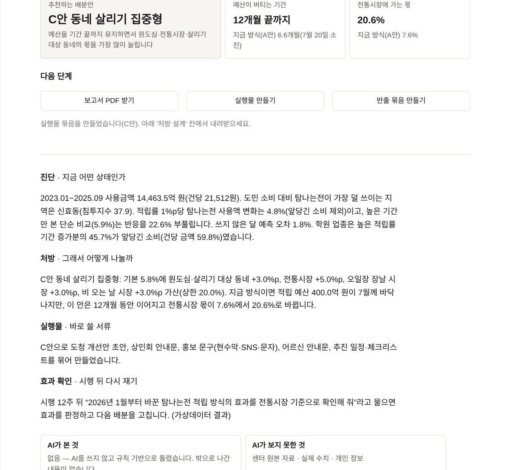
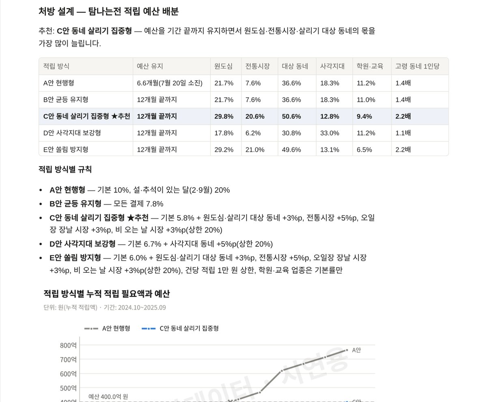
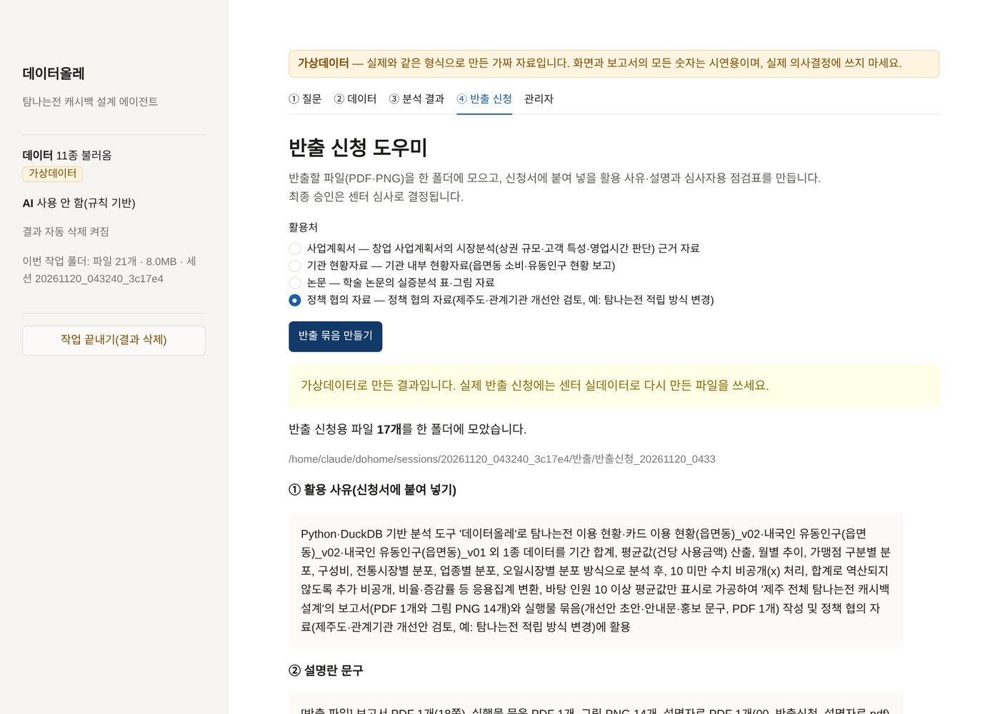
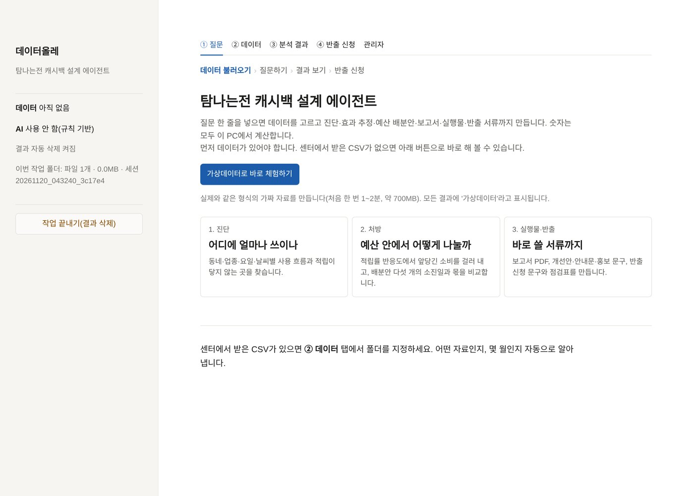

둘러보기는 화면을 그대로 옮긴 미리보기이고, 실제 계산은 설치해야 합니다. Windows에서 설치.bat → 실행.bat 두 번. 센터 CSV가 없어도 첫 화면의 "가상데이터로 바로 체험하기"로 전 과정을 그대로 볼 수 있습니다.
아래 화면과 숫자는 모두 가상데이터로 만든 시연 결과입니다. 실제와 같은 형식으로 만든 가짜 자료이며, 실제 의사결정에 쓰지 마세요.
질문 하나에 대한 답
추천하는 배분안
C안 동네 살리기 집중형
예산을 기간 끝까지 유지하면서 원도심·전통시장·살리기 대상 동네의 몫을 가장 많이 늘립니다
예산이 버티는 기간
12개월 끝까지
지금 방식(A안) 6.6개월 — 7월 20일 소진
전통시장에 가는 몫
20.6%
지금 방식(A안) 7.6%

답 맨 위에 결론, 그 아래 '다음 단계' 세 가지. 진단 → 처방 → 실행물 → 효과 확인 순서로 답합니다. 에이전트가 어떤 도구를 왜 썼는지도 타임라인으로 보여 줍니다.
왜 '진짜 반응'을 따로 재나
적립률을 올린 달과 전년 같은 달을 그냥 비교하면 1%p당 5.9%가 나옵니다. 하지만 그중 상당 부분은 새 소비가 아니라 학원비 선결제처럼 시기만 앞당긴 소비입니다. 그걸 걷어 내면 4.8%입니다. 흔한 방식이 반응을 22.6% 부풀리는 셈이고, 이 차이가 "7월에 예산이 바닥난다"와 "연말까지 간다"를 가릅니다.
순수 반응
1%p당 +4.8%
앞당긴 소비를 걷어 낸 값
앞당긴 소비 비중
증가분의 45.7%
학원·교육 업종 기준
백테스트 오차
1.8%
추정에 쓰지 않은 달로 검증
같은 예산 400억 원, 다섯 가지 배분

소진일·전통시장 몫·혜택 쏠림·고령 동네 1인당 적립액을 나란히 놓고 고릅니다. 반응은 가정하지 않고 자료에서 매번 다시 추정합니다.
고른 안으로 바로 쓸 서류까지

센터 밖으로 가져갈 수 있는 파일만 모으고, 10건 미만 칸을 가리고, 합계로 되풀 수 있는지(역산)까지 검사한 뒤 반출 신청서 문구와 점검표를 만듭니다.
설치.bat — 파이썬 환경과 라이브러리를 깝니다. 파이썬이 없으면 받는 곳을 안내합니다.
실행.bat — 브라우저가 열립니다.
첫 화면 "가상데이터로 바로 체험하기" → 예시 질문 "예산 400억 원 배분" → "에이전트에게 맡기기"

데이터가 없으면 할 일이 하나만 보입니다. 센터 CSV가 있으면 폴더만 지정하면 어떤 자료인지, 몇 월인지 자동으로 알아냅니다.
만든 것
질문 해석 → 데이터 선택 → 분석 → 보고서·실행물까지 하는 에이전트
적립률 반응도 추정 — 앞당긴 소비 분리, 신뢰구간, 백테스트
같은 예산 배분 시뮬레이터와 역진성 지표
반출 검수 — 10 미만 비공개와 역산 방지를 코드로
센터 CSV 형식 11종·33개월치를 만드는 가상데이터 생성기
자동 테스트 108개
설계 — 숫자는 이 PC, AI는 거들 뿐
표와 그림의 모든 숫자는 분석 PC 안의 DuckDB가 계산합니다. AI에는 질문의 수치를 [수치]로 가려서 보내고, 센터 원본 자료와 실제 수치는 내보내지 않습니다. 그래서 AI 키가 없어도 규칙 기반으로 모든 기능이 똑같이 동작하고 결과 숫자도 같습니다. 기관 Claude 키가 있으면 관리자 탭에서 넣어 AI 모드로 쓸 수 있습니다.